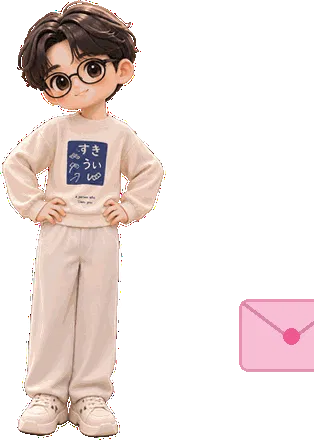

Một bầu trời trái tim
dành riêng cho Hician ♡
Có một lá thư đang tìm đường đến cậu...
♥



Gửi riêng Hician
Có muốn mở lá thư này không? 💌
Ame đã mang đến 20 tấm ảnh lưu giữ 19 kỷ niệm của hai đứa mình.
19 kỷ niệm, 20 tấm ảnh ♡
Cuộn xuống từng kỷ niệm nhé. Ame sẽ hỏi “Anh còn nhớ…?”, còn Hician sẽ đáp lại bằng những lời dễ thương.